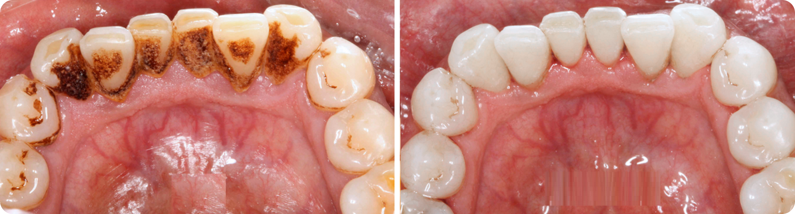
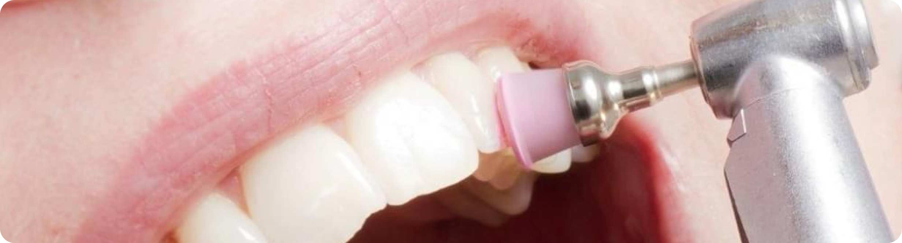

Каждый знает, как важно чистить зубы. Однако, к сожалению, у большинства людей это выходит неверно, что может привести к образованию зубного камня. В этом случае ситуацию исправит посещение стоматолога.
Как получить услугу профессиональной очистки зубов в Medeko
Если вы устали от неприятного запаха, налета и зубного камня, обращайтесь в сеть стоматологических клиник MEDEKO. Чистка зубов у них будет выполнена на высоком профессиональном уровне за разумную цену. Стоимость удаления отложений с 1 зуба с помощью современного ультразвукового скайлера составит 30 грн, чистки 1 челюсти – 350 грн. С чистыми здоровыми зубами ваша улыбка станет безупречной.
Откуда берется зубной камень
Не секрет, что после употребления кофе, чая, а также при курении у большинства людей может появиться налет коричневого цвета. Если на него начнут оседать соли слюны, к которым присоединяются колонны бактерий, возникает зубной камень. Это благоприятная среда для патогенной флоры, что впоследствии может вызвать воспаление вплоть до пародонтита и потери зубов. Кроме того, как свидетельствуют факты, бактерии, находящиеся в полости рта, пораженного зубным камнем, могут попасть в кровоток, провоцируя возникновение атеросклероза, который в свою очередь опасен возникновением инсульта или инфаркта.
Разновидности зубного камня
В стоматологической практике различается 2 вида камней:
- поддесневые – от коричневого до черного цвета, обнаружить которые может только стоматолог при наличии специализированного оборудования;
- наддесневые – от белого до светло-желтого цвета, заметные невооруженным глазом, которым преимущественно подвержены передние зубы.
Этапы чистки зубов в стоматологии

Профессиональную очистку зубов можно разделить на 4 периода:
- подготовительный этап – консультация врача, а также, при необходимости, прохождение необходимых дополнительных исследований;
- этап удаления зубного камня;
- этап полировки зубов, который выполняется абразивной пастой, способной продлевать срок службы пломб;
- этап покрытия зубов фторсодержащим гелем, который упрочнит зубную эмаль.
Приборы для удаления камня на зубах
- скалер ультразвуковой, который используется для аккуратного дробления камней. Если во время проводимой процедуры вы будете испытывать неприятные ощущения, сообщите об этом доктору. Он уменьшит мощность скалера и процедура станет не только полезной, но и приятной;
- Air-flow – прибор для удаления налёта в труднодоступных местах, а также полировки зуба. Процесс представляет собой очистку зубов направленным потоком воздушно-водяной смеси;
- вращающиеся щёточки с нанесенной специализированной пастой, эффект от чистки которой значительно выше, чем при использовании обычной. Использование данной методики сопряжено с минимальным количеством противопоказаний, однако позволяет достичь эффективности в очистке зубов только в комбинации с другими методами.
Показания к чистке
Показаниями являются отложения, камни, налет, потемнение эмали, наличие имплантатов и коронок, неприятный запах в ротовой полости.
Противопоказания к чистке
Возраст клиента (детям и подросткам процедура не проводится), воспалительные процессы, ОРЗ, аритмия, повышенная чувствительность.
